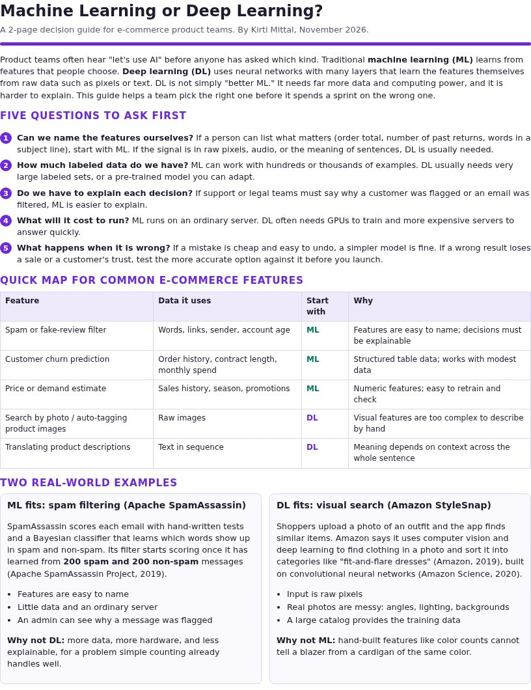

Machine Learning or Deep Learning? A Decision Guide for E-commerce Teams
In product meetings, "let's use AI" often comes before anyone asks which kind. I have seen teams jump straight to the most advanced option, then struggle with the data, cost, or explanations it requires. Artifact 1 showed that I can build and test an AI tool. This artifact shows a different skill: analyzing a problem and choosing the right AI approach, then explaining that choice in plain language.
A downloadable 2-page decision guide (PDF). It includes:
- Five questions to ask before choosing: can we name the features, how much labeled data we have, whether we must explain each decision, what it will cost to run, and what happens when it is wrong.
- A quick map of five common e-commerce features, such as spam filtering, churn prediction, and search by photo, with the approach I would start with and why.
- Two real-world examples, one where traditional machine learning fits and one where deep learning fits, each with the reason the other approach does not.
- Mistakes to avoid and a one-line rule of thumb.

- Help non-specialists decide between machine learning and deep learning with a few clear questions.
- Show, with real products, why the "more advanced" option is not always the right one.
- Practice turning a class report into something a working team can use in a planning meeting.
- Started from my class report. In Assignment 2.3, I compared one machine learning example from the lesson (email spam detection) with one deep learning example (image recognition) and found a real product for each.
- Checked every fact against the source. For spam filtering, I used Apache SpamAssassin's documentation, which says its Bayesian filter needs 200 spam and 200 non-spam emails before it starts scoring. For image recognition, I used Amazon's own descriptions of StyleSnap, which finds clothing from a shopper's photo using deep learning and convolutional neural networks.
- Changed the audience. The report was written to explain differences to a grader. The guide is written for a product team, so I turned the lesson's three key differences (feature extraction, data requirements, and complexity) into five questions a team can actually answer.
- Added e-commerce examples from my own work, like churn prediction and search by photo, so readers can see where their feature fits.
- Cut it to two pages so it can be shared in a meeting and read in a few minutes.
Challenges and how I solved them
- The lesson's algorithm and the real product did not match exactly. The lesson pairs spam detection with logistic regression or a decision tree, but SpamAssassin uses a Bayesian classifier. I explained that both are traditional machine learning, because people still choose the features.
- Too much to fit. My report was over 1,300 words. I kept only what helps a decision and moved the detail into the two example boxes.
- Avoiding hype. It is easy to make deep learning sound like the answer to everything. I added a "mistakes to avoid" section that starts with "starting with DL because it sounds more advanced."
- Course lesson on machine learning vs. deep learning, plus official documentation from Apache SpamAssassin and Amazon
- HTML and CSS to design the guide, exported to PDF
- GitHub Pages to host this portfolio
- An AI assistant to help organize the guide and check wording. The examples, analysis, and recommendations are my own.
This artifact shows that I can evaluate AI options, not just use them. I can look at a business problem, ask the right questions about data, cost, and explainability, and recommend the simplest approach that will work.
Most ML vs. deep learning explanations are written for data scientists. This one is written from a frontend and e-commerce point of view, for the people who decide what gets built and have to explain it to customers. It also says plainly when deep learning is the wrong choice, which many guides leave out.
Online stores are adding AI features quickly, and choosing the wrong approach wastes money and time and can hurt customer trust. A short, shared set of questions helps product, design, and engineering agree on the approach early, which is exactly where AI projects tend to go wrong.
Amazon. (2019, June 5). StyleSnap will change the way you shop, forever. https://www.aboutamazon.com/news/retail/stylesnap-will-change-the-way-you-shop-forever
Amazon Science. (2020, December 23). The science behind Amazon's new StyleSnap for Home feature. https://www.amazon.science/latest-news/the-science-behind-amazons-new-stylesnap-for-home-feature
Apache SpamAssassin Project. (2019, June 22). BayesInSpamAssassin. https://cwiki.apache.org/confluence/display/SPAMASSASSIN/BayesInSpamAssassin